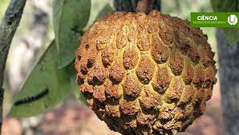
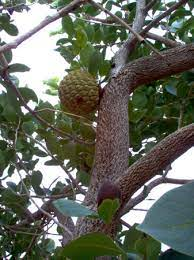
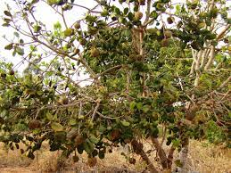

Araticum
Araticum (Panã) é um fruto nativo do Cerrado. Também é conhecido por marolo, pinha, mamão, bruto e também como "cabeça de nego", assim conhecida no Norte de Minas . Araticum é nome dado a diversas espécies da família Annonaceae, mesma da fruta-do-conde, conhecida também como ata ou pinha, dependendo da região.
O maroleiro é uma árvore de 2,5 a 3,5 m de altura, com o diâmetro da copa chegando a 2–4 m, da família das anonáceas, que ocorre, de forma descontínua, no cerrado brasileiro. A planta tem preferência por regiões de cerrado com menor déficit de umidade, em Minas Gerais, Mato Grosso do Sul, pequena parte do interior de São Paulo e em partes isoladas de Goiás, Mato Grosso, Tocantins, Maranhão e leste da Bahia. Mas é em Minas Gerais que o fruto é típico e muito apreciado.
Possui sistema radicular do tipo axial que atinge grandes profundidades no solo, para absorver água e nutrientes. O seu tronco é reto com galhos tortuosos, a casca é corticosa, fendida e grossa.
A destruição do Cerrado e diminuição das espécies
O crescente desmatamento do cerrado e a germinação demorada das sementes, que pode atingir até trezentos dias, têm contribuído muito para a diminuição radical dos maroleiros em Minas Gerais. É notável o trabalho de pesquisa científica e cultivo desenvolvido pelo Doutor João Afonso de Carvalho, professor da Escola Agrotécnica Federal de Machado, no sul de Minas para preservar os maroleiros daquela região. As localidades que concentram maior número de árvores da espécie são Carvalhópolis e Paraguaçu.
Dormência
A dormência das sementes de araticum não está relacionada ao tegumento, mas a problemas endógenos. Sua imersão por quatro dias em ácido giberélico nas concentrações de 250 a 2000 mg/L por quatro dias ou 1000 a 2000 mg/L por dois dias foram igualmente eficazes para quebrar a dormência. A escarificação mecânica do tegumento favorece a absorção do GA34 e, consequentemente a germinação das sementes e emergência das plântulas, mas não quebra a dormência "per se". O choque térmico em água quente e a embebição prévia das sementes em água natural tambêm não promovem a quebra da dormência.
A palmeira
O “Marolo de Moita” (Annona dioica) foi descrita por Saint-Hilaire. Trata-se de uma variedade de marolo que cresce nos cerrados brasileiros, sendo muito resistente a seca, podendo ser cultivada a pleno sol e em qualquer pequeno espaço . É rara, rústica e não necessita cuidados especiais. A planta adulta tem cerca de 50 cm de altura. Os frutos tem tamanho grande, polpa clara e sabor doce. É muito consumida ao natural e é também utilizada para fazer sorvetes, doces e licores.